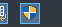
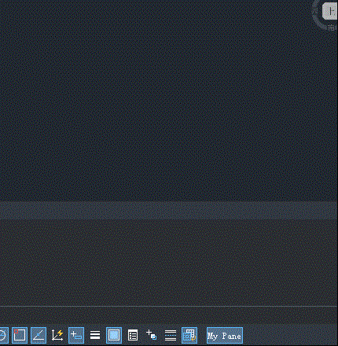
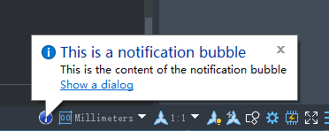
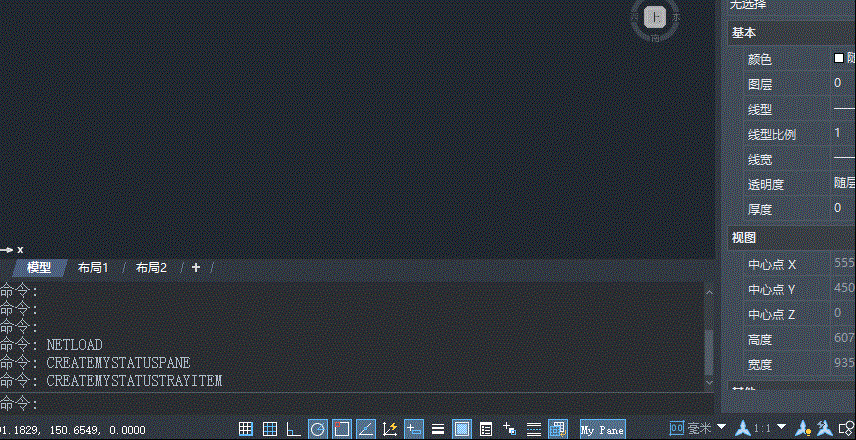

The status bar at the bottom of the software displays partial settings status and essential information of the current drawing space. You can use .NET interfaces to add custom buttons to the status bar or provide user prompts via bubble messages during program execution.
Custom Panes
Creating Status Bar Panes
Status bar panes are implemented through the Pane class and can be used to display toggle states of certain settings.

Pane myPane = new Pane();
myPane.Enabled = true;
myPane.Visible = true;
myPane.Style = PaneStyles.Normal;
myPane.Text = "My Pane";
myPane.Icon = System.Drawing.SystemIcons.Shield; // If you want to display text, you can delete this line
myPane.ToolTipText = "This is a Pane on Status Bar.";
Application.StatusBar.Panes.Add(myPane);
Adding Click Events to Panes
Use the MouseDown event to detect pane clicks and set PaneStyle values to achieve state switching.
...
// Add the following line during pane creation to bind the mouse click event
myPane.MouseDown += MyPane_MouseDown;
...
// Implement the MyPane_MouseDown event
private static void MyPane_MouseDown(object sender, StatusBarMouseDownEventArgs e)
{
Pane paneBtn = (Pane)sender;
string alertMsg;
// Check if the left mouse button is pressed
if (e.Button != System.Windows.Forms.MouseButtons.Left) return;
// Trigger different events based on the current pane state
if (paneBtn.Style == PaneStyles.PopOut)
{
paneBtn.Style = PaneStyles.Normal;
alertMsg = "The Pane Style has changed to Normal";
}
else
{
paneBtn.Style = PaneStyles.PopOut;
alertMsg = "The Pane Style has changed to PopOut";
}
Application.StatusBar.Update();
Application.ShowAlertDialog(alertMsg);
}
Runtime Effect

Bubble Notifications
Creating Bubble Notifications
First, create a TrayItem object to display the bubble notification.

TrayItem trayItem = new TrayItem()
{
ToolTipText = "This is a Tray item.",
Icon = System.Drawing.SystemIcons.Information,
};
Application.StatusBar.TrayItems.Add(trayItem);
TrayItemBubbleWindow bubble = new TrayItemBubbleWindow()
{
Title = "This is a Bubble Window.",
Text = "This is the content of Bubble",
HyperText = "Display a dialog",
IconType = IconType.Information,
};
trayItem.ShowBubbleWindow(bubble);
Setting Hyperlink Trigger Events in Bubble Notifications
Add processes to be triggered when hyperlinks are clicked via the Closed event.
// sender: object
// e: TrayItemBubbleWindowClosedEventArgs
bubble.Closed += (sender, e) =>
{
if (e.CloseReason == TrayItemBubbleWindowCloseReason.HyperlinkClicked)
{
Application.ShowAlertDialog("You clicked the link in the tooltip bubble.");
}
Application.StatusBar.TrayItems.Remove(trayItem);
Application.StatusBar.Update();
};
Runtime Effect

Implementation Code
Refer to the .NET sample project code: ZwDotNetGuide/CustomizeUserInterface